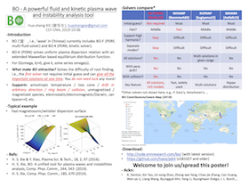

2018.02 -
Chief Scientist of Fusion Simulation
Center for Compact Fusion (CCF-ENN), Deputy Director
ENN Science and Technology Development Co.,Ltd. [新奥科技发展有限公司（新奥能源研究院）]
Mail: a). 河北廊坊开发区华祥路新源东道新奥科技园智能大厦，065001;
b).
Huaxiang Road, Economic and Technological Development Zone, LangFang Hebei, China 065001
E-mail: xiehuasheng[at]enn.cn, huashengxie@{gmail.com, 126.com}
Safety survived for days.
* English name called by my friends: Edward Watson.
New (2019-09-06): A new state-of-art plasma wave and instability analysis tool named 'BO' (‘波’, i.e., 'wave' in Chinese) has been published. 
Refer it as:
Hua-sheng XIE, Introduction to Computational Plasma Physics (in Chinese), Science Press, Beijing, 2018.
Or:
谢华生，计算等离子体物理导论，科学出版社，北京，2018.
Resume
2015.10 - 2018.02, School of Physics, Peking University Postdoc
2010.09 - 2015.09, Institute for Fusion Theory and Simulation, Zhejiang University Master & PhD
2008.09 - 2010.07, Zhejiang University Minor: Public Administration
2006.09 - 2010.07, Zhejiang University Major (B.S.): Physics
Selected papers
H. S. Xie, BO: A unified tool for plasma waves and instabilities analysis,
Computer Physics Communications, 2019, 244, 343–371.
H. S. Xie, Y. Xiao and Z. Lin, New Paradigm for Turbulent
Transport Across a Steep Gradient in Toroidal Plasmas, Physical Review Letters, 2017,
118, 095001.
H. S. Xie and Y. Xiao, PDRK: A General Kinetic Dispersion Relation Solver for Magnetized Plasma, Plasma Science and Technology, 2016, 18, 97.
H. S. Xie and Y. Xiao, Unconventional ballooning structures for toroidal drift waves, Physics of Plasmas, 2015, 22, 090703.